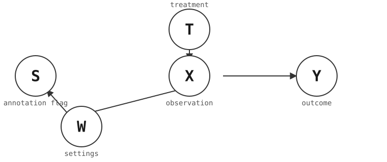
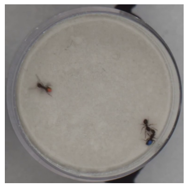
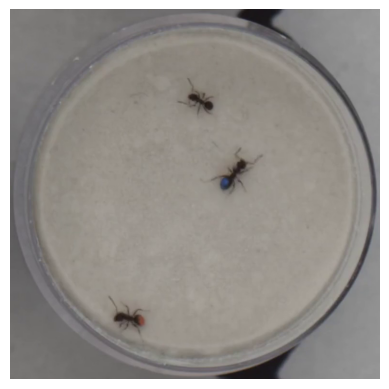
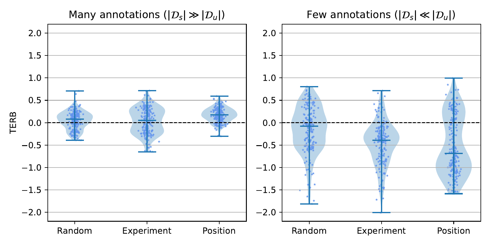
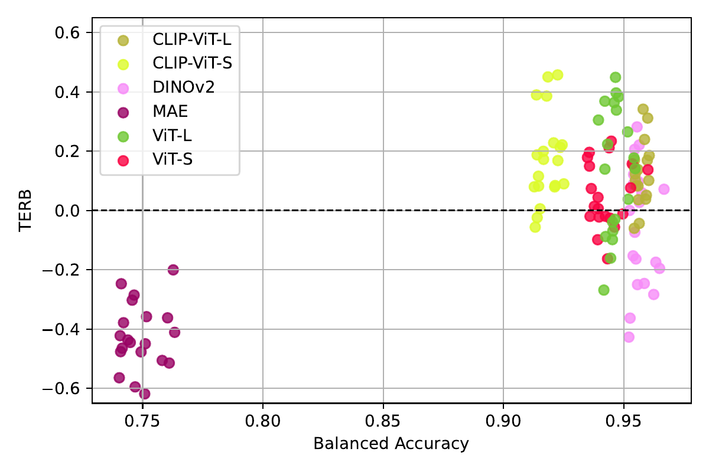
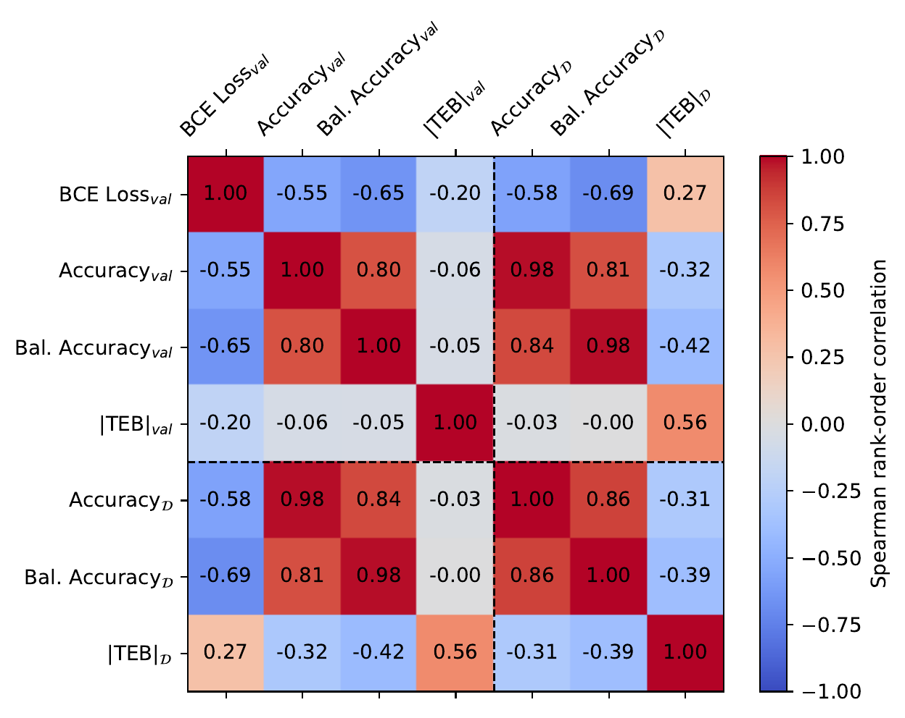

Smoke and Mirrors in Causal Downstream Tasks
When a model predicts behavior almost perfectly yet still biases the scientific conclusion — and ISTAnt, the first real-world benchmark for causal inference from high-dimensional observations
Many scientific questions are causal, yet the machine-learning models used to read outcomes off high-dimensional data are tuned for prediction accuracy. This paper studies the simplest causal setting — estimating the average treatment effect in a randomized controlled trial whose outcome is hidden in video — and shows theoretically that common practices (thresholding predictions into hard labels, selecting models by held-out accuracy, non-random annotation sampling) can bias the causal estimate even with a near-perfect classifier. To test this in the wild, the authors collected ISTAnt, the first real-world benchmark for causal downstream tasks on high-dimensional observations: an RCT on how garden ants (Lasius neglectus) groom microparticles off nestmates. Across 6,480 fine-tuned vision models, sampling and modeling choices significantly move the causal estimate, and classification accuracy is not a proxy for it.
Overview
AI is increasingly used to answer scientific questions — folding proteins (Jumper et al. 2021), forecasting weather, recognizing animal behavior (Sun et al. 2023) — and many of those questions are ultimately causal. This paper asks a deceptively simple version: in a randomized controlled trial (RCT) where the outcome of interest is buried in high-dimensional observations such as video frames, can we just fine-tune a state-of-the-art vision model to read the outcome off the frames and recover the right causal effect?
The answer is a cautionary one. Even in this ideal setting, the authors show — both in theory and on a real experiment — that several routine machine-learning choices can quietly bias the causal conclusion, and that classification accuracy is not a reliable proxy for getting the causal estimate right.
The setting: causal effects through a learned model
Consider a binary treatment T randomly assigned within an experiment with controlled settings \mathbf{W}. The outcome Y is not measured directly; it is recorded in high-dimensional observations \mathbf{X} (e.g. video frames). The goal is the Average Treatment Effect,
\mathrm{ATE} := \mathbb{E}[Y \mid do(T{=}1)] - \mathbb{E}[Y \mid do(T{=}0)].
Under the RCT (Ignorability) assumption (Rubin 1978), the ATE is identified by the purely associational difference \mathrm{AD} := \mathbb{E}[Y\mid T{=}1] - \mathbb{E}[Y\mid T{=}0] — no adjustment needed. The catch is that annotating Y from the recordings \mathbf{X} requires costly expert labels. So only a subset of frames is annotated: a binary flag S marks whether a frame is labeled, splitting the data into an annotated set \mathcal{D}_s and an unannotated set \mathcal{D}_u. A model is trained on \mathcal{D}_s to impute the outcomes on \mathcal{D}_u, after which the RCT identification recovers the ATE over the full population.

Why accuracy is not enough
The paper formalizes a model’s treatment effect bias (TEB): the difference, across the two interventional arms, between the systematic error a model f makes on the observations and the true outcome. A model is treatment-effect unbiased when its over- and under-estimations cancel out across the two arms, so the ATE computed on its predictions matches the true ATE — even if individual frames are misclassified.
The headline theoretical result connects accuracy to this bias. A predictive model with classification accuracy 1-\epsilon can incur a treatment effect bias of magnitude as large as
|\mathrm{TEB}(f)| = \frac{\epsilon}{\min_t P(T{=}t)} \;\ge\; 2\epsilon,
which the authors note can invalidate the causal conclusion whenever the true ATE is comparable to \epsilon and/or the treatment groups are imbalanced. Crucially, for any fixed error rate the bias is not determined — it depends on how the misclassifications distribute across the arms. Accuracy and similar metrics therefore do not capture how good a model is for the causal task. The authors connect this to the fairness notion of treatment equality (Berk et al. 2021), where one balances false-negative and false-positive rates across groups; TEB measures the analogous difference rather than ratio.
Discretization is silently biased
A second, subtler source of bias is post-processing. Most classifiers model the conditional expectation \mathbb{E}[Y\mid\mathbf{X}{=}\mathbf{x}] directly through a sigmoid or softmax output — yet the default predict of common libraries (e.g. logistic regression in scikit-learn (Pedregosa et al. 2011), or binary outcomes in EconML (Battocchi et al. 2019)) rounds this to a hard \{0,1\} label.
The paper proves that thresholding a consistent probability estimate yields an estimator that still converges — but to a different quantity with a different expectation. So discretizing the predictions biases the downstream ATE estimate, for any fixed threshold (except one distribution-dependent value that is not observable in practice). The recommendation is blunt: never arbitrarily discretize predictions for downstream treatment effect estimation.
ISTAnt: a real-world causal benchmark
To see whether these worst cases actually bite, the authors built ISTAnt — to their knowledge the first real-world dataset for treatment effect estimation from high-dimensional observations. Behavioral ecologists want to know whether different microparticle types differ in how strongly they induce grooming — the hygienic behavior by which ants pluck particles off a nestmate’s body surface.
A focal Lasius neglectus worker ant is treated by applying one of two microparticle types to its body, and the grooming behavior of two untreated nestmates toward it is filmed. The two nestmates are color-coded with a dot of blue or orange paint so the treated individual can be told apart. Across five batches, nine ant groups of three were filmed under a single controlled camera setup, yielding 44 videos of 10 minutes at 30 fps — 792,000 frames annotated by experts following a blind procedure; the analysis is run at 2 fps, for 52,800 frames.


Because the true causal effect of a real experiment is never exactly known — the authors take the full expert annotation as ground truth under the Ignorability assumption — they complement ISTAnt with CausalMNIST, a synthetically colored manipulation of MNIST (LeCun et al. 1998) whose generative process follows the same causal model, with the ATE explicitly controlled. Repeating the analysis on CausalMNIST reproduces the same conclusions.
What 6,480 fine-tuned models reveal
The model f is a frozen pre-trained encoder e feeding a small fine-tuned MLP head h. The authors sweep six established Vision Transformers as encoders — ViT-B and ViT-L (Dosovitskiy et al. 2020; Zhai et al. 2023), CLIP-ViT-B/-L (Radford et al. 2021), MAE (He et al. 2022), and DINOv2 (Oquab et al. 2023) — across token-pooling choices, head depth, learning rates (Adam (Kingma and Ba 2014)), targets, with/without output discretization, and five seeds. In all, 6,480 models are fine-tuned (9,720 evaluations once the two grooming targets are counted separately). For interpretability the TEB is reported as the Treatment Effect Relative Bias, \mathrm{TERB} = \mathrm{TEB}/\mathrm{ATE}.
Annotation sampling matters
Three annotation criteria are compared: per-video random (the practical gold standard) versus biased per-experiment (\mathbf{W}_1) and per-position (\mathbf{W}_2) sampling, each in a few-shot (\mathcal{D}_s \ll \mathcal{D}_u) and many-shot (\mathcal{D}_s \gg \mathcal{D}_u) regime.

In the realistic few-shot regime, random annotation keeps the estimate far more centered around zero, while the biased criteria drift. A two-sided t-test for \mathbb{E}[\mathrm{TEB}(f)]=0 over the 200 best models per criterion rejects unbiasedness for nearly every criterion — even when restricting to the best models by balanced accuracy.
The encoder choice — and why accuracy misleads
Across the 20 best models per encoder, balanced accuracy and TERB decouple once accuracy is high enough. Among models with balanced accuracy above 0.95, the authors still measure TERBs of up to \pm 50\% — large enough to flip a causal conclusion.

One encoder, MAE, underperforms all others. The authors attribute this to its masked-reconstruction objective over-attending to the (comparatively large) background instead of the small ants — supported by a Fréchet-distance analysis showing MAE’s embeddings shift most between \mathcal{D}_s and \mathcal{D}_u under the position split, where the background changes most. The broader lesson: better predictive encoders (e.g. DINOv2, CLIP-ViT-L) do not translate into lower causal bias.
Prediction is not causal estimation
Tying it together, the authors compute Spearman rank correlations across 1,620 models among model-selection metrics — both on a small validation set and on the full dataset.

Standard prediction metrics (BCE loss, accuracy, balanced accuracy) correlate strongly among themselves but are almost uncorrelated with |\mathrm{TEB}|. The single metric that best predicts the causal bias on the full dataset is |\mathrm{TEB}| measured on a small validation set — outperforming even prediction accuracy computed on the full data. Concretely, for the realistic few-shot/experiment-sampling case, selecting the single best model by validation |\mathrm{TEB}| rather than accuracy reduces the underestimation of the effect from 18% to 11%. A direct t-test over all 6,480 models also confirms that discretizing outputs significantly worsens the treatment effect estimate (t = -10.42, p = 1.07\times 10^{-25}), as the theory predicted.
Takeaways
Even in an RCT — the most favorable possible setting for causal inference — reading a causal effect through a fine-tuned vision model is not a solved problem. Seemingly innocuous choices (how frames are sampled for annotation, which backbone is used, whether predictions are thresholded, how models are selected) can significantly bias the answer, and classification accuracy does not warn you. The authors are explicit about the limits: they froze the backbones, did nothing at training time to mitigate the bias, and did not exploit the unlabeled data for semi-supervised learning — all promising directions, alongside importing tools from the fairness literature. Their guidance for the field: build benchmarks around the real downstream scientific question (here, a causal one), select models with the treatment effect bias in mind rather than accuracy alone, and develop adaptation-time debiasing for representation learning in the sciences.
The ant photographs and the data figures on this page are reproduced from the original paper, released under CC BY-NC-SA 4.0; the causal-model diagram is a schematic redrawn by the editors of this page. A copyable BibTeX entry for this page is generated below.
Citation
@inproceedings{cadei2024,
author = {Cadei, Riccardo and Lindorfer, Lukas and Cremer, Sylvia and
Schmid, Cordelia and Locatello, Francesco},
title = {Smoke and {Mirrors} in {Causal} {Downstream} {Tasks}},
booktitle = {Advances in Neural Information Processing Systems
(NeurIPS)},
date = {2024-05-27},
url = {https://arxiv.org/abs/2405.17151},
doi = {10.52202/079017-0820}
}